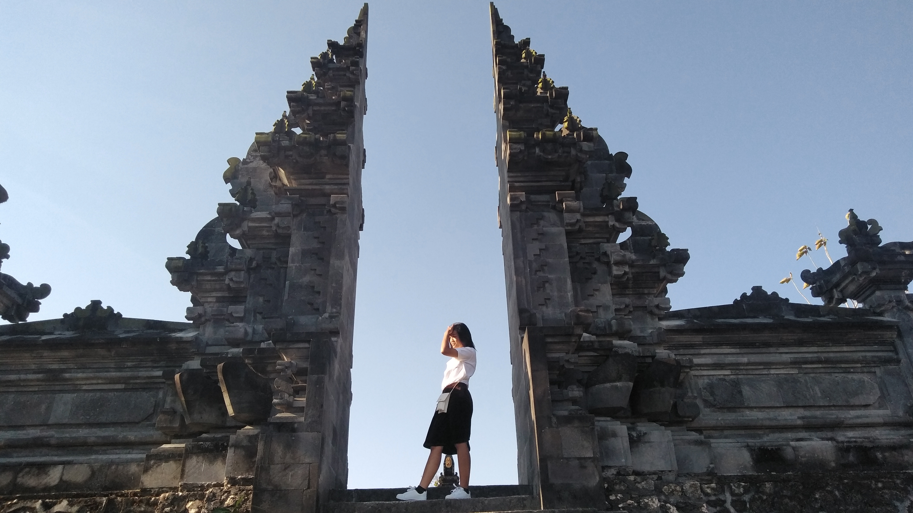

HOMEBiodata Penulis

Nama Lengkap :Tessalonica Putry Avrylya
Nama Panggilan :Tessa
TTL :Tangerang, 27 April 2002
Umur :18 Tahun
Gender :Perempuan
Golongan Darah :A
Agama :Kristen Protestan
Alamat :Dusun Ngampel RT/RW 002/006, Desa Tirtosuworo, Kecamatan Giriwoyo, Kabupaten Wonogiri
Prodi :S1 - Teknik Informatika
Fakultas :Fakultas Teknologi Informasi
Universitas :Universitas Kristen Satya Wacana
Cita-cita :Pengusaha
Hobbi :Main Game
Film Favorit :The Davinci Code-Dan Brown
Genre Music :Jazz
Buku Favorit :Daun Yang Jatuh Tak Pernah Membenci Angin-Tere Liye
Anime Favorit :Kimi No Nawa & Koe No Katachi
Kesan Kuliah UKSW
Pastinya bangga karna salah satu list impian saya sudah terwujud. Mungkin bagi sebagian orang kuliah di swasta bukan suatu kebanggan. Tapi bagi saya Tuhan masih beri kesempatan untuk mengenyam bangku perkulihaan itu sudah suatu berkat yang luar biasa. Karena dikeluarga besar saya hanya ada satu orang yang pendidikannya sampai sarjana dan itu membuat menjadi motivasi lebih lagi. Kalau ditanya kesan untuk masuk di UKSW jujur aja belum bisa jelasin karna belum tau sama sekali kampus ini. Bahkan menginjakan kaki di Salatiga saja belum, lewat sudah. Tapi intinya bukan tentang kampusnya tapi tentang tekad diri. Sebagus apapun perguruan tinggi kalau diri sendiri tidak ada motivasi untuk maju sama saja. Karna perguruan tinggi hanya sebatas wadah dan jembatan untuk mahasiswanya. Dan saya yakin harapan semua mahasiswa untuk merealisasikan segala yang dicita-citakan adalah dengan berkuliah.
Kesan Masuk Kelas PTI E
Masuk kelas Asdos PTI E enggak expect bakal se-asik ini. Aku kira asdosnya akan galak dan masih menganut senioritas. Ternyata enggak sama sekali. Mereka ngajarnya juga mudah dipahami. Cuma ya ada beberapa tugas yang dikasih limit waktu 1-2 jam itu yang buat enggak nyaman. Jadi enggak bisa ngerjain totalitas, orientasinya cuma yang penting terkumpul. Menurut saya itu yang harus dipertimbangkan lagi untuk kedepannya. Btw karna masuk kelas ini saya jadi manusia nokturnal WKWK. Saya lembur tugas sampai pagi buat ngerjain tugas dari kelas ini belum ditambah tugas yang lain. Apa bener stereotype tentang anak IT "Jangan ngaku anak informatika kalau tidur lewat dari 2 jam" enggak ini sebatas jokes waktu aku masih SMK. Intinya saya harap kedepannya saya bertemu dengan kelas matkul yang manganut sistem seperti ini lagi.


 Instagram
Instagram
 Twitter
Twitter
 Youtube
Youtube
 Facebook
Facebook
 Whats Up
Whats Up